(10 min. read)
“Are you ready to hear me talk about board games?!”
An eruption of cheers and excitement. Hands fly into the air, I can just make out the first few rows under the bright lights but the crowd is loud.
“Today I have for you three revolutionary games. The first game’s scale is enormous. It encompasses all of humanity. Everything from the poverty in the third world to the cutting edge tech of Silicon Valley.”
“The second game is short. It plays in under an hour, while not sacrificing any strategic depth.” Graphics are appearing behind me on stage as I deliver the keynote. With every sentece a chorus of cheers moves through the crowd.
“The third game is about uncertainty. You never are sure what will be worth points until the very end."
The graphics disappear. All the lights go dark except a single spotlight on me. I pause a beat.
“Actually, I don’t have 3 separate games for you. What I’m describing is actually a single game. A game with a large scale, that plays in under an hour, and is exciting at every moment.” An explosion of light behind me as the graphics spin and flash. Pax Transhumanity.
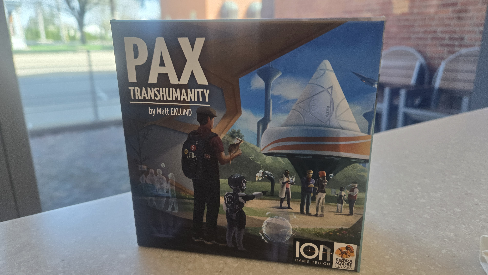
“A better game! A game beyond the slag we’ve had before! Such a shining example of what design can be! I thought the crowd was loud before, now it’s a typhoon.
“In this game you’ll operate globe spanning companies! Get ready to build and innovate!” The stage under me shakes with the shouts so much I wonder if it’ll hold together.
“Your scientists will push the boundaries! Go beyond what was ever thought was possible!”
“Get ready! Because in this game you will… syndicate the ideas to allow commercialization! Get ready to do maker work in the first world and use your patents! Deploy your think tank to use ideas by completely avoiding the need for syndication. Cause a nuclear exchange impact to discard a number of solved problems in the indicated sphere. Get ready for the Human Progress Splay!”
...
What? Did I say something wrong?
...
Is it the theme?
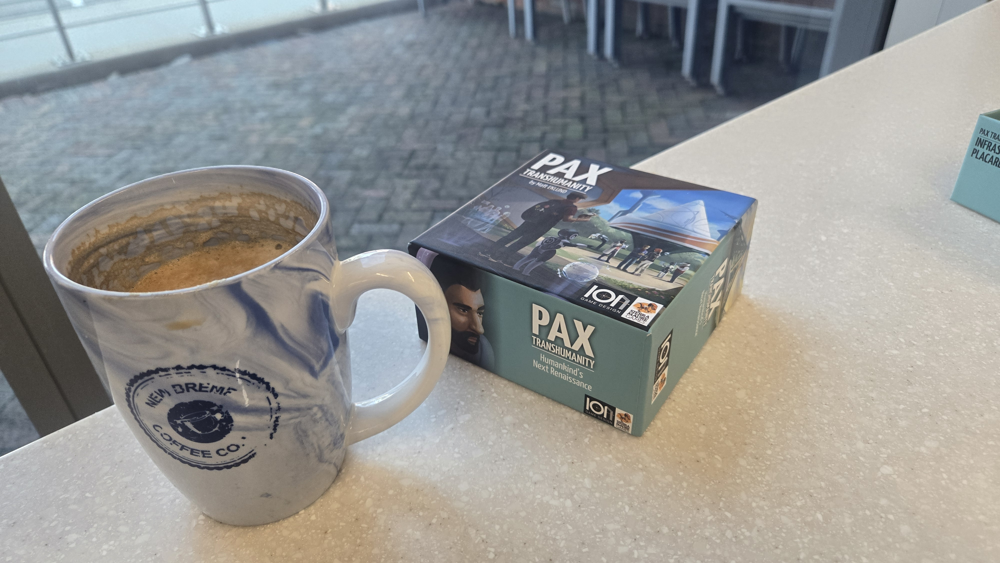
Pax Transhumanity is obtuse. I imagine your eyes glazed over those nonsense words at the end of that skit. Bad news: those are the words actually used in the game. Commercialization, Patents, Thinker Work, Developing World, Human Progress Splay etc. These are all game terms. I was taught this this game at a convention. My friend knew the rules would overwhelm me so he prefaced his rules explanation with “For your first game, don’t try to do any strategy. Just try with all your might to simply perform legal actions. That's all you'll be able to do.”
What wild advice! I’m an experienced gamer, I read rulebooks for fun. I can handle complexity. But my friend was right. We aren't dealing with ordinary complexity with this game. This game’s rules are madness.
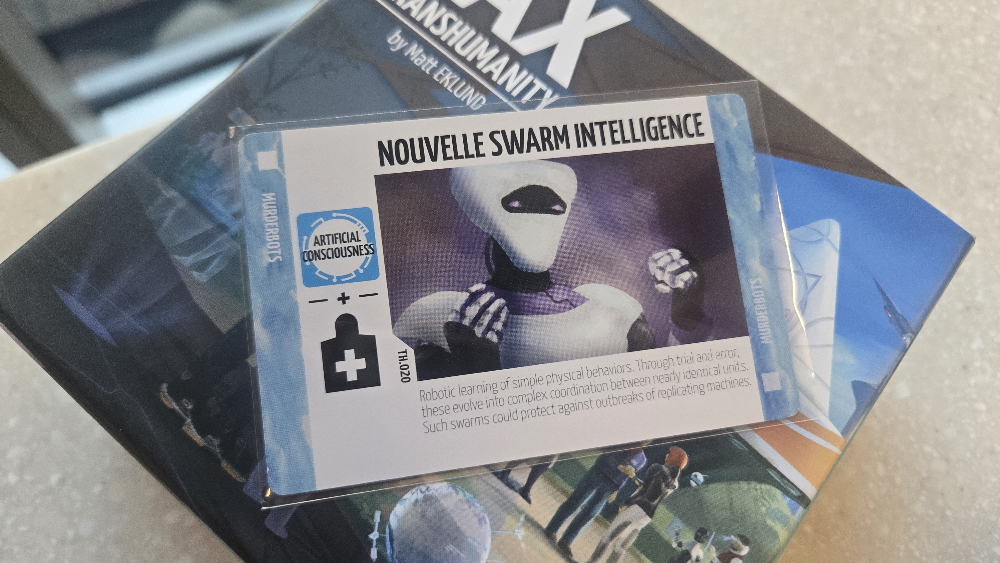
Look at this card. None of those words are rules text. Those are purely for flavor. Instead of text explaining the rules, what we have instead are these moon-rune looking symbols. Don’t worry though, the rulebook has a glossary saying what the symbols do. How many are there? Twenty-two. That’s kinda a lot. But they follow a pattern right? No. Are the symbols at least intuitive? Well, you tell me.
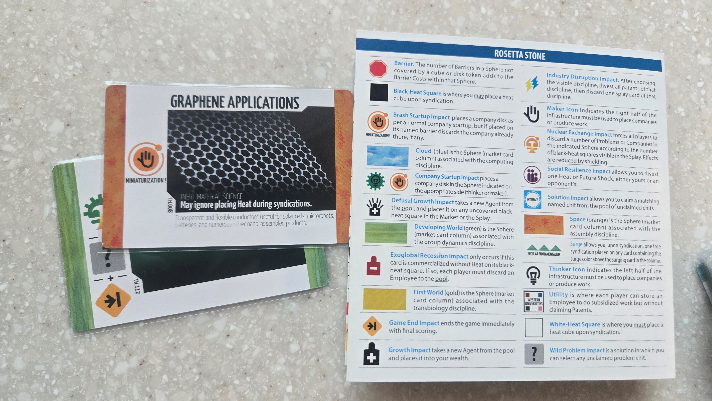
That orange circle on the left means “start a company” while that orange symbol under it means “end the entire game”. Yeah that little innocuous orange arrow mean THE GAME IS OVER. And don’t worry, the context in the game doesn't help either.
I like symbols in games. Symbols can make a game so much more readable. It's always faster to read a good symbol than read a sentence explaining an effect. You can know what something does at a glance: if the symbols are good. Great Western Trail for example is a great with great symbols. It's possible to see a symbol in that game and just guess what it does because it's so intuitive. No rulebook required. Brown/Blue pointing to your deck? That’s buy a brown/blue sheep and put it on top of your deck. What about the dog card, bird card, and boat card? They all mean “get a dog/bird/boat.”
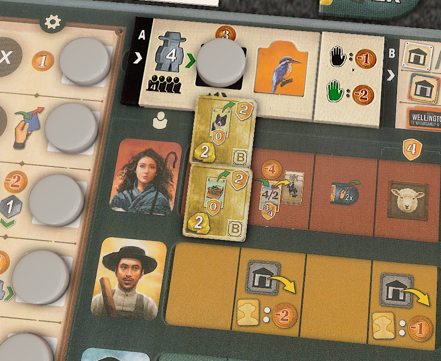
Great Western Trail game is 10x more complex than Pax Transhumanity but it’s somehow easier to learn. And the difference is obvious: Pax’s symbols are complete bollocks.
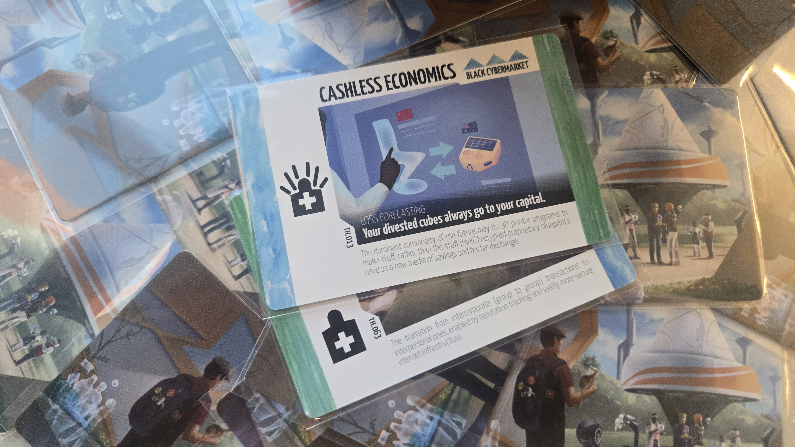
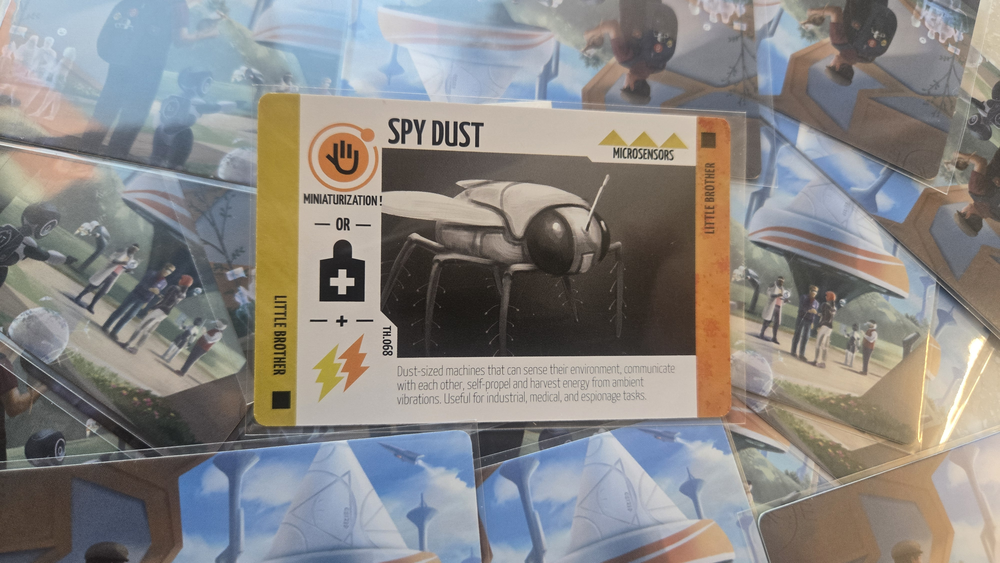
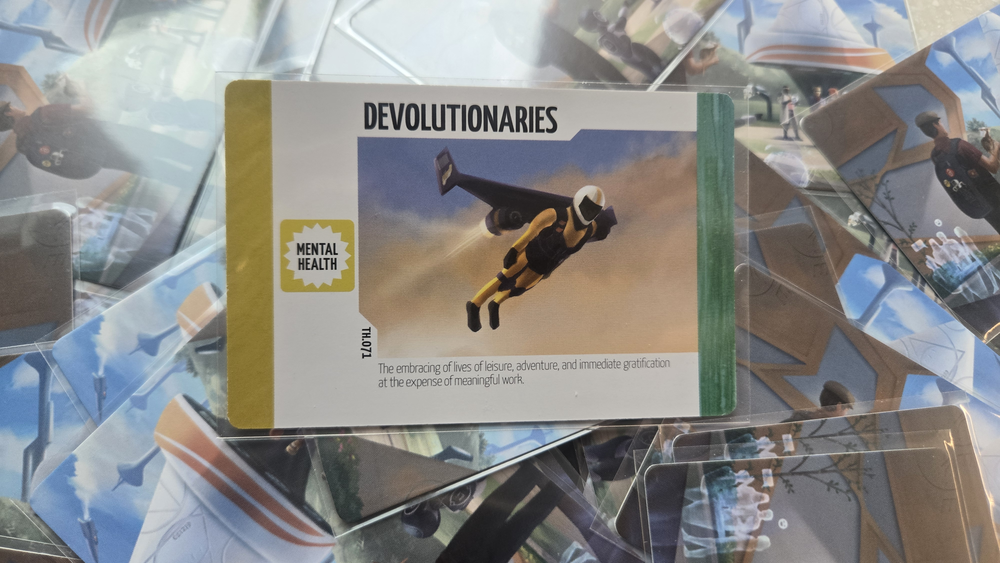
Could these symbols have been designed better? Is it possible to make this system not nonsense? Yes. But it needs to be a priority. And it wasn't a priority here. Maybe you are a smart player and picked up that the colors are important. Then the game will throw a purple symbol at you. You go around the board looking for the other purple things it connects to, but they doesn’t exist. Eat that you stupid idiot. Purple circle means something entirely different from all the other colors! Enjoy picking up the rulebook to learn what that does!
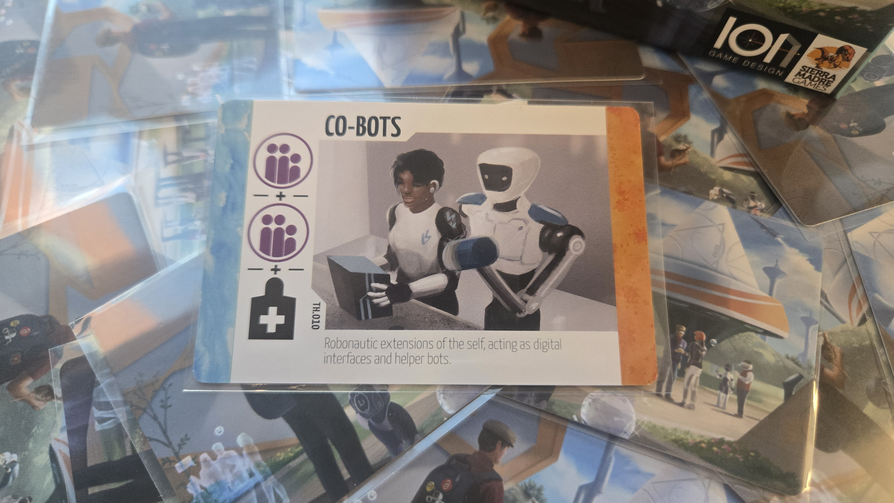
I guess the designers didn't have time/money to design an intuitive and comprehensive set of symbols for this game, but that won’t stop designer Matt Eklund from using symbols anyway! During playtesting he had to see who bad the symbols were, but he persevered! He is made of tougher stuff than you and I. His tenacity and stubbornness are admirable, and i’d probably want him leading my squadron in like a war, but I don't want him designing my board games.
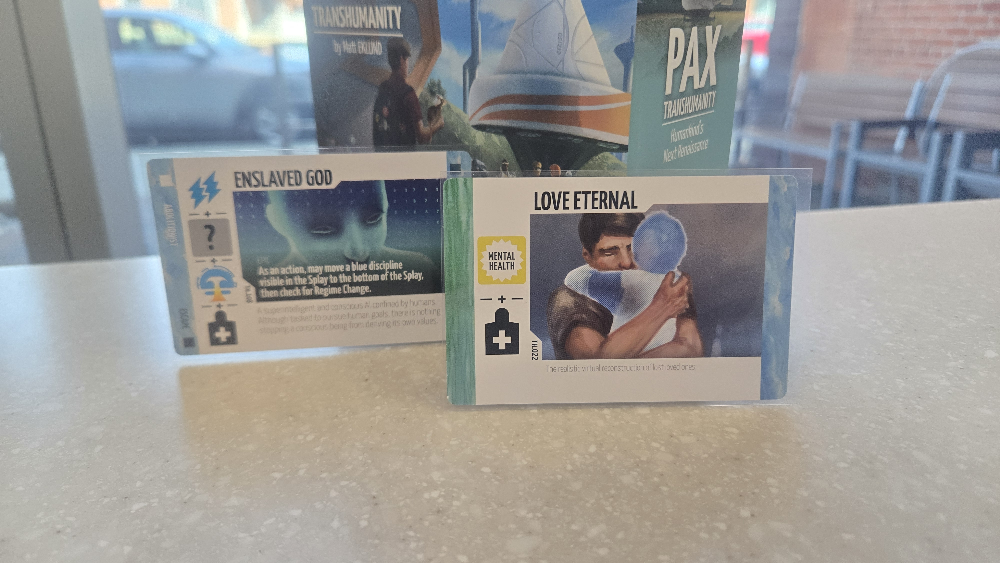
Dear reader, you know how important theme is in a game. Theme grabs your attention and makes you excited. Sometimes a strange rule is made clear because of a theme. What's Pax Transhumanity's theme? Transhumanism. You know what that is? Exactly. Basically it's radically using technology to improve human lives. Stuff like putting computers in our brain or modifying our genes. Right now transhumanists are talking a lot about AI. And I won't lie to you: I knew a bit about transhumanity before playing this game, and it did not help me learn the rules at all.
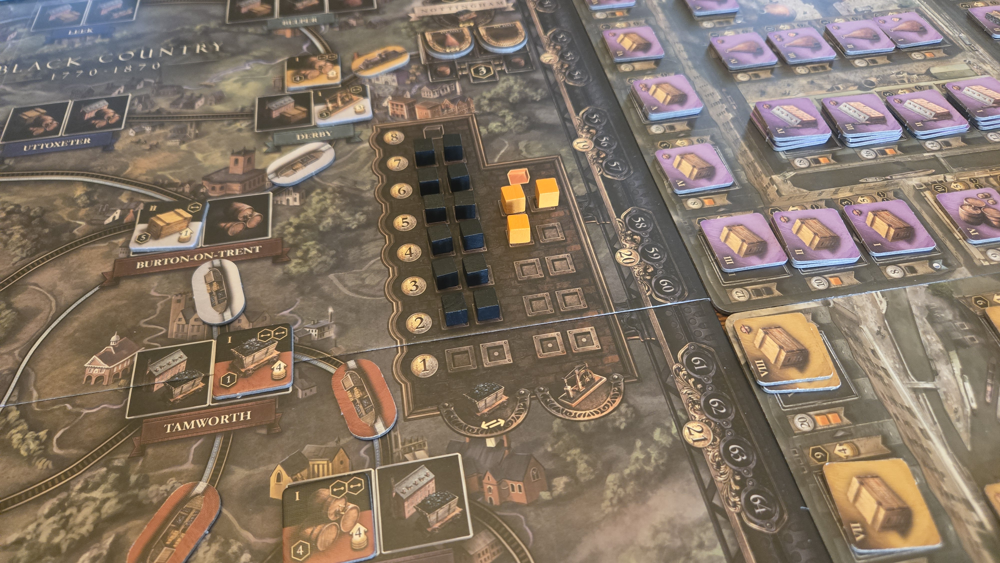
Let me teach you how Brass Birmingham’s market works. Here’s the market. If you try to sell iron to a stocked market you can only fill these cheap bottoms spots – you won’t get paid much. But if you sell to an empty market you can fill the expensive high spots. Buy when the market is full and flush. Sell when it's empty. As you can see, this a really simple model of a market.
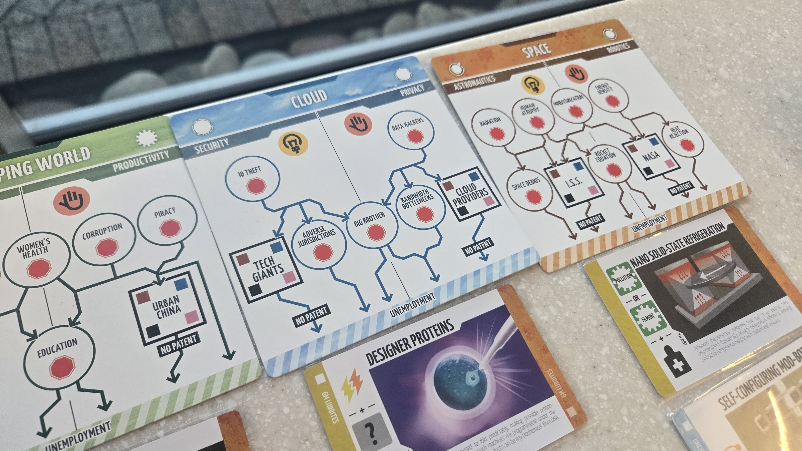
Contrast this with a much simpler system in Pax Transhumanity. To hire an agent you put them in a sphere. Spheres are um... Spheres are basically areas of commerce or maybe research. They are the First World, Developing World, Space, and Cloud. Duh. What else would the spheres be? Place your hired agent on one of the circles in a sphere. The circles represent jobs, I think. And you either employ them as a researcher, inventor, or both. (By placing them on the left or right side) This is because people specialize in real life. And when an agent does something they move downward. Don't ask me why being a data hacker leads to work in "Bandwidth Bottlenecks".
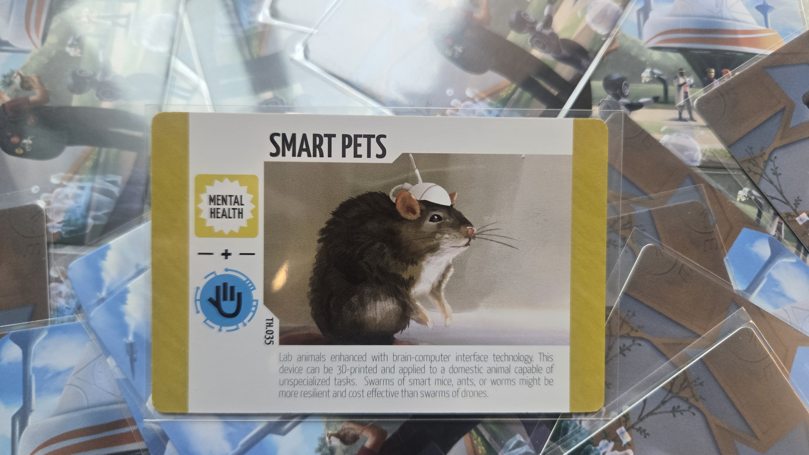
Hiring an agent is one of the simplest actions in the game. But without the theme helping you, this simple action feels more complex than it is. The rulebook doesn’t use words like “cards” or “activate” when it can use words like “ideas”, or “commercialize”. You could probably change the theme of this game to winemaking and it would make about as much sense. It might even be better to learn without terms like “fallout impact” or “divest”. We’d use terms like “ferment”, “age”, or “bottle”. These terms aren't helpful, but they'd be less intimidating.
The game’s problem isn’t actually complexity. This is not a giant complex monster like a Twilight Imperium. The terms make it so much worse than it actually is. The rules are so simple they could be condensed into a single flowchart. In fact the game does this. I imagine if the game wasn’t completely insane this flowchart might actually help you learn the game. It doesn't though.
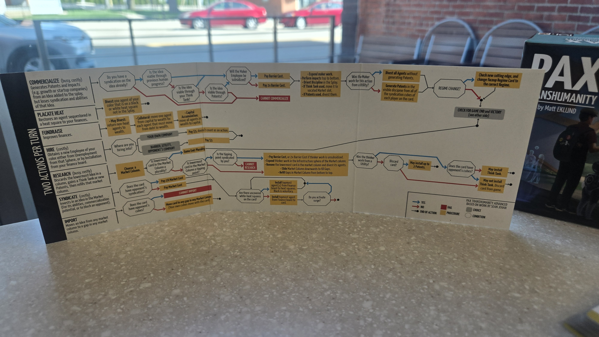
This article has a twist ending. Learning this game is like sending your brain through a meat grinder. Your synapses are crushed between its metal gears and reduced to paste. Once broken down, your brain paste will slowly reform. You’ll develop entirely new neural pathways just for this game. You, somehow, start to see lines of logic running through the whole game… It’s... Beautiful… The game actually is really thematic. What were you thinking before? The game actually makes perfect sense.
Like Paul Atreides emerging from the Water of Life with blue-in-blue eyes, you’ve awakened to designer Matt Eklund’s genius. What before was obtuse and bizarre is strangely inevitable. There’s no other way this game could’ve been. The theme simply demands these things. It all naturally flows from the game’s core theme. The game has done the impossible. It’s done a hat trick and transformed itself from an unintelligible mess to something strangely elegant.
Reader, I hope you reach this point one day. I hope you ascend the mountain of game design genius and reach the peak. Once you are up here you can look down on the world below. It’s so small. It’s so… provincial. That’s the whole thing huh… This Pax Transhumanity game. Maybe it’s strange to say this, but it’s actually really funny?
The game reads like a parody of board games. Weird terms, offbeat theme, intimidating topics. It feels like farce. It feels like a real life version of that Parks and Recreation skit Cones of Dunshire.
The game feels like a parody game, without actually being complicated. And when it clicks it's elegant. It only uses the comical language of an overly complicated board game as part of the joke. It has all the benefits of giant complicated game without actually taking 8 hours. It plays in like 45 minutes. It’s hilarious. And it’s hilarious to play too. Witht the right group teaching this game is a riot. You know how much i’ve laughed playing this game? It’s a sidesplittingly funny. “Quick do a nuclear exchange event because he like an idiot divested his heat! Oh no! That’s the third blue tech in the progress splay! AAAAAA FREE RESEARCH YES! NO! NO! DON’T COMMERCIALIZE THAT NOOO!” And then we all look up at each other and burst out laughing at the silliness of what we just said. If you ever get the chance, have some brewskies and learn this game. With the right group there’s nothing like it.
Pax Transhumanity is a very special game to me. It’s my sweet little princess. On one hand baffling terminology, until it clicks. Once it clicks there’s nothing like it. This game deserves the world. 10/10.